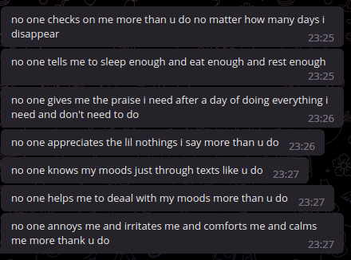

2/12/2022@02:06
its 2am as im writing this nothing came to my mind but to find a way to just write my thoughts out and just idk have a thing left from me after i kick the bucket and at least a way to get my feelings out without being awkward i already feel like a whining bitch maybe its my ego maybe its my insecurities trying to stop me but as once someone who i hold near and dear to my heart said i always know whats wrong but idk how to fix it, maybe this will be my copium.
3/12/2022@00:40
today was an absolute nightmare that weird mixed feeling of letting go but still having hope is getting stronger i feel weakened but at the same time healing i dont like to lose the feeling i held for [REDACTED] but at the same time i feel like i need to give up idk im either growing numb to this pain or im getting over it whatever it is i hate it with every fabric of my being.
4/12/2022@05:45
i tried my best to stop myself from writing this early but i couldnt sleep the moment that heartache goes away i feel like im losing feelings and anxiety fills me up that all the time we spent meant nothing im frankly either so traumatized by this experience that my brain is trying to detach itself to all that happened and save the pain of saying goodbye again or i was just caught in temporary feelings and forgot myself im nothing but confused and paranoid rn idk maybe it just feels that god awful when ur aware ur saying goodbye without the possibility to say hello again.
5/12/2022@02:25
another night another push im getting used to this pain and the more i think about it the more i realize i find too much comfort in my illness and problems so instead of trying to fix it i just give in to it my best distraction so far for a short burst of time is tech talk and tech problems literally minutes before writing this xorg refused to launch and i spent couple mins troubleshooting it and completely forgot about everything and focused on fixing well that aside i should stop bitching about my emotions bit more and just take this shit head on or die trying.
6/12/2022@02:30
oh boy does it hurt like a bitch im just living with the pain im simply done with this whole love shit if she doesnt come back, idk why im still bitching about it but ig it is what it is, well on the brighter side im getting me a 500gb external drive to dump my shit on and get busy dicking with that for a while tho still school and all is out the window since im basically unwanted in this whole shithole im counting days to get outta here.
7/12/2022@02:30
one more day till we either talk again or ill either show my commitment or make a fool of myself for the next 2 coming years, that aside i finally got the drive (yay) spent lotta time organizing it and theres still more left to do but im tired to it now idk why but when it comes to small pointless stuff like organizing a drive i can sink several hours to it but when i wanna get work done every single cell of my body tries to stop me by any means.
8/12/2022@01:11
today seemed like an usual day and decided to cook myself lunch since ive been feeling better and i was hopeful for thursday at exactly 15:30 when i checked my phone and was pleasantly surprised to see her msg as usual we talk and hands down for the shortest time around this time taking only 1h11m and after we said our goodbye (which i basically had no other choice), couple hours after that im filled with nothing but sadness and raw angst best way to describe it is like cutting open a stab wound putting a 12gauge inside and fucking blasting it then covering the remains with salt, i am fighting myself to not scream from the top of my fucking lungs, i wasnt expecting to hurt this fucking much for the 3rd time but it absolutely fucking does and i hate it with all my existence, tonights push was supposed to be about how github rounds up and fucks up the date, but with the current pain thats killing me i rlly cant think of nothing else but how bad its hurting and how little time i spent with her for the last time until the next 2 years and hearing her ex stalking her while im here and cant do shit is nothing short of agonizing.


9/12/2022@01:20
it seems like writing my thoughts and frustrations out makes me feel better, the pain from last night still stands but i feel less angry about it, i wasnt feeling to do a push tonight, tbh i was about to give up on daylio too, i feel drained but ik if i take a break from writing im gonna stop forever, eitherways i beat the shit out of my both drives due to putting excessive loads on them and well since theyre hdds they get a massive performance hit so tmrw i wont be using this thing unless im gonna do a push kinda annoying that i have to reboot back here to do them since i dont like having dupes on my other installs past 2 days ive been more active on windows side more since i found the new interest of game modding it might make me start learning actual programming and scripting than this but who knows for now i feel super drained and used up after a while in very near future i might just go ghost mode and get cold.
10/12/2022@01:00
it pains me that i cant have her im trying collect myself but i seem to fail every time i hear a song or see her comments and i just go back to square 1, that aside im starting to do pushes quicker since im scared im gonna stop journaling tho i still think about what to write every day when i wake up and then i forget half of it while writing, anyways today i modded 2 games (yay ig) it wasnt nothing impressive just replaced the soundtracks of the games and that was it tho it took long to convert every file 1 by 1 seems like i have a short distraction for now and thats the reason im forcing myself to push update since im too busy fucking around in those games, im filled with so much self hatred its unbearable, i envy her for her strength and proud of her for that at the same time i just can hope shes doing well and fight the urges to either send someone after her or make an alt myself but im so afraid of what the outcomes might be.
11/12/2022@00:01
one of the earlier pushes yet its starting to become a chore but im gonna keep doing it nevertheless i dont she knows or cares that anyone can read comments on pages without an acc idk reading her comments and seeing shes doing fine kinda hit me to the point of i almost sent someone after her some things dont line up if her mom made her to cut contact with me why she blocked all my followers? why does she sound so cold? i say to myself these and start to read out old msgs and see the way she used to act doesnt line up to do such thing i mean how can one be so outright evil to dedicate months of their lives to someone and ditch them, if this whole thing was a lie ill never forgive her what she did to me and i just hope she comes back to prove me wrong again.

12/12/2022@01:17
today i learned my clothes can soak more water than a damn sponge, so basically we decided to go out with the bois and i just had to get out right at the peak of rain we met a cafe after going back and forth between 2 spots and basically i got soaked like a rat so i head back home and change and we head to another friends house couple hours later we decide to head out but one of us goes up to the rooftop and thats exactly when the night began, so there was this boxing bag/sack whatever its called in english and yk boys being boys we went at it, and ill admit nothing feels better than channeling all that frustrations into a punch i hit that bag so hard my right knuckles are bruised as im still writing this hours later and it feels kinda cool to look at i enjoyed every single hit i laid on that bag and now i just wanna keep doing it, it silenced every voice in my head and just felt so damn good i just cant describe it, yk its good have a distraction from feeling having a knife getting twisted in ur guts, boys be boys ig.
13/12/2022@00:21
today i rolled the worst blunt heading to school just wasted time get investigated by the teachers at least i had a bit of quality time hanging with my friends but then after lunch break i rolled an even worse blunt and let myself to head home and be alone with my thoughts, that aside back of my hand now hurts from last night also my back too? somehow i worked the muscles out by punching the bags but ig it is what it is, i dont rlly have much to write down tonight besides the usual pain and my friends picking up my mood swings my brain gone so desperate to distract me to the point of trying me to move fully back to windows just bc i gamed too much there and now suddenly its telling me to delete the current linux partition and just go back which me being me making the most outlandish shit sound reasonable and its the only thing i cant distract myself from cuz its the thing that im always interacting with i made using this side a chore for myself basically by forcing myself to boot here for the nightly pushes and my lazy brain has picked up on that, as always i just to find another distraction to get the rid of intrusive thoughts (which i already had too many during the past couple weeks) maybe ill just pick up my psp and forget idk.
side note: my friend finally sent the vid he recorded from last night and i did not expect it to turn out this sick.(im the one on the left)
14/12/2022@01:30
last night to get myself a distraction i decided to share this site in my friends gc i doubt that they read it now but last night after doing it i had a panic attack that it might get shared around too much and then after couple mins i realized wait a minute my whole friend group is just loners like me then i got bit calm felt insecure about it but at least it was a good distraction the intrusive thoughts still stand strong and just shapeshifts to different things, my feelings about her are starting to shape and not in a good way i cant explain it how but its turning into some sorta hate? i genuinely dont like it and i dont like feeling that way for someone who i hold near and dear to my heart currently this has turned into a battle against myself and thoughts, i feel a bit proud of myself from the recent events and thats prolly why my brain has been trying to drag me back to the illness by giving me these mental gymnastics, back of my right hand till my elbow feels sore now i need to get back on track theres lotta things im refusing to write since it would just make 1 nights paragraph fill up a whole page but in general its been getting better or at least thats how it seems for now.
15/12/2022@00:30
others downfall makes me feel good today by pure curiosity i looked up someones bf who i wanted to hit on from last year break up with her and just post all that depressed shit, tho im going thro the same sorta pain it somewhat makes me feel happy when i saw him in pieces like that maybe its bc i dont like ppl who act like thugs and gang bangers when they are nothing near it in reality that aside i heard someone i despised from last year kick the chair and found dead yesterday, i felt somehow good about it, idk either im too mentally ill to enjoy this shit or ive been this way my whole life and didnt know, someday somehow im gonna be the villain in someones story just matter of time anyways that aside i feel like i made her too much of a saint in my head or maybe she was just that good idk my feelings about her keep changing for a minute i miss her and everything about her and the other minute i hate her for not putting me as a priority while i was willing to make as many sacrifices as i could its fucks with ur mind thinking about how someone made u feel so valued and loved to just getting ditched cuz momma said so, for now i feel like im getting good at disciplining myself with this journaling im taking baby steps to make myself more habits i feel like its time for change in myself tho writing all this feels like a massive nothing burger to me and i just perceive it as advanced attention seeking.
16/12/2022@03:12
after a long while i woke up from a dream about her had to tell myself in my dream that its too good to be true and tried to wake up multiple times couldnt think of anything else but that during the day well maybe thinking about what to write on here a daily basis counts, this whole week was pretty damn dry and im running out of things to write out here spent the past couple days dicking with my setups and got distracted with those seems like its the only thing that can distract me, after the push from last night i started overthinking again about how she got tired of me and lost interest and all that bs so i just rushed to my phone and read most of our recent chats again then i noticed there was none of that the more time passes the more i realize she did love me but im still paranoid, seems like the only way my brain can cope is either make demons of her or throw intrusive thoughts at me its annoying as fuck but i have to get along with it if i fight back it will get worse (which it is already) at a far slower pace eitherways i dont like it and i doubt it will ever go away till she or someone comes to rescue which is quite pathetic for someone who was alone basically most of his life and never got attached to anyone but cant let go of this damn girl cuz she made him feel loved and valued for once.
17/12/2022@00:54
god im losing my shit every time i talk to someone my brain keeps giving me false positives and i get filled with anxiety that im catching feelings i do not like it even one bit its another form of intrusive thoughts my brain is throwing at me im so fuckin attention deprived its insane i rlly cant think of anything else writing this down ik she told me to not wait on her but im not ready to set myself up again cuz ik im gonna get attached this is basically a panic attack im writing down its uncomfortable and unsettling to think about anything and anyone else every part of my brain is fighting another all my thoughts are in conflict im having unknown feelings that i cant understand ik its gonna go away in a day or so but i just dont like it to be here in the first place my brain is foggy again and i need to clear it up.
18/12/2022@00:50
last night panic attack wasnt a good time as its seen and it insisted couple hours after i woke up, everything is looping again i was thinking about giving up on journaling again just going for the low hanging fruits to get distracted, every time i talk myself out of panic attacks i feel like this guy -> i hate how it feels tbh i dont got much to write down tonight same old pain keeps rushing back to me and preventing me to do anything im trying to stay strong and bounce back and i am progressing well in my own eyes but it doesnt seem enough and my mood swings and anxiety doesnt seem to help it god im such a fucking crybaby at times i hate it i need to get up and move on but it feels awful man theres like a hole left in me that nothing can fill it and when its about to i stop it in fear of going thro the same shit again tho still in all this heartache i admire my will to keep going seems like the indomitable human spirit never goes away and i love it, this pain is a sign that i had a good time before and its kinda beautiful as sad as it is that i for once enjoyed someones company without overthinking as much as i usually do which is quite a lot more than it seems.
19/12/2022@00:50
i was feeling a lot better today and i felt a bit relieved after a while but of course that changed real fast when sun went down all the hold thoughts about getting ditched and played creeped up and basically destroyed all my mood then after a while i thought about everything i usually do to convince myself that wasnt the case which writing it down sounds like damage controlling but i cant put it well in words and i already bitched about it million times, consuming any sort of content wipes out my brain and i can totally see why social media ruins productivity i cant say all types of content that affects me personally but there is couple games that silence the voices (best example burnout revenge its the only game that can feel like therapy with how it helps u channel all ur frustrations into defenseless ai and just going so fast u cant think of anything else.), that aside i realized how much i start to pay attention to how much i write as in like im facing a essay or something kinda annoying but i like it makes me push myself to write more in depth, rn i just feel like i lost something that im not getting back and im forced to accept it mere thought of her replacing me or me replacing her is somehow frightening for me its becoming one of those hard to swallow pills it sounds creepy and obsessive but i do selfishly want her for me and me only i dont think there would be anyone else out there that can figure her out other than me oh well i can only wish she felt the same, but well mourning about this shitfest aside things start to fall apart now i think about it theres this specific 2 weeks that i spent with her that rlly made me more paranoid, i hope im just overthinking shit again.
20/12/2022@01:56
today wasnt a good day to begin with my moods been all over the place since i woke up most of it was for my dehydration and waking so damn early its like my brain cant generate serotonin between 8 to 13 either that or it was just my mood swing and generally feeling low thro the whole day i felt so done with everything earlier today to the point of not caring about anything at all still kinda am done with everything but not like fighting the urge to kick the chair im just sick of being sad and tired constantly im still very tired mentally i got my life sucked outta me at this point no hopes of going forwards just wanting to get out of here as soon as humanly possible it felt dreadful and agonizing to put lightly i just dont want to care anymore about anything im quite honestly done i feel like i done all i could ik i should bounce back and get back on track but i need time and i already feel like shit knowing its been long enough already i was so full of self hate today i cant even describe it every small flaw felt like an unforgivable sin i just dont see myself worthy enough for forgiveness, at this point i just wanna either hit a reset button and start my life over again or just move to a new place and turn a new leaf tho im still very hopeless about getting out this shithole, i just wanna feel at peace for once is that too much?
21/12/2022@01:00
im just done, i feel like i let my insecurities get ahead of me too much and my paranoia consumed me whole im not gonna take time off journaling but im gonna take time off from this thing that i got too deep in, i cared too much and i lost too much it still hurts but i cant do much about it than to just complain i need to just set my mind free if she wants to she comes back i gave all i got and now its on her to make her mind if she comes back great if she doesnt lost cause it is, tho i went to school today i have very little to write down tonight since well i forgot most of it and just wasted my time there with nothing happening, it feels weird that i dont have much to write tonight kinda makes me feel like im gonna drop writing soon which i hope not since i do like this but im running out of things to say cuz i got everything out that i had to say for the past while and now im stuck with this smidge of anxiety that im gonna stop, other than that today was a plain waste of time and i cant get too personal here for the sake of my own privacy, as u guys noticed the time of pushes got in a time range of 00 to 03 since im kinda worried if im gonna fall asleep and just drop the writing the next day since the flow is broken im repeating myself too much but i wanna write more and more by day and this is the one thing i truly hate about myself i turn everything to a chore and complain that its a chore it never ends and idk how to deal with it i have lotta passions and hobbies lost to this and i just plain hate it.
22/12/2022@00:28
it still haunts me seems like i just cant escape it im trying to live with it sometimes i feel like its gone like last night but then the next day it creeps up on me and just rules over me and its just bad, feels terrible i just have to live with it as long as theres time i dont got much on my mind lately i wanna put more images and shit in here but i gotta log on to websites and rip the images and all to put here but since i changed my distro couple nights ago im too lazy to log on there even now i havent logged back in many accs since i just didnt feel like it i should stop forcing myself to write early since im not letting more thoughts to shape, anyways rn im getting back on track on seeding the iso files i got since i forgot to backup my qbittorrent dotfiles and now i have to run every torrent 1 by 1 and set the location on my external drive to seed them again theres prolly a way to batch open torrents but since i set sub directories its prolly not practical enough to do so, besides that i hooked my usb to a vm installing debian directly on it but since its an old ass usb 2.0 stick its overheated and throttling i did install it once but then the vm didnt boot (since i forgot to set it to boot from the stick) i thought the install was broken and wiped the whole thing and started again then i realized what ive done now i just feel stupid sometimes i forget this is meant to be a diary and i dont write what actually happened during the day and just rant about my emotions in the most cringiest and edgy way imaginable then i feel bad about it and fight the urges to take all this down, which kinda shows insecure i can get at times.
23/12/2022@00:20
well today didnt have a good start to begin with turns out i failed my class since i couldnt find an internship so i have to change school which it doesnt bother me much im happy to leave that school idc, i came home and played around with a windows 11 vm too see how much i can gut the thing and it still would work installing it was a pain in the ass with all the shit i had to bypass since microsoft sucks ass after that i ran several scripts to cut down the bloat (which there was alot left) and spent couple more hours doing stuff manually it looks decent ngl but it runs like utter dogshit which idc much i dont wanna game on it i have my own bare metal setup then after i was done i decided to dual boot that vm with windows 7 but suddenly the iso doesnt like to load anymore and i have no clue whats the reason but i gave up on it and im gonna try doing it in a seperate vm, that aside the one thing that truly ruined my night was these couple updates for xfce that basically ruined my theme and made it not only look bland but took away the rounded corners of native apps window and title bar and unified it u may say its good for consistancy but no this was actually a bad decision as ill show below, im actually bummed over this as lame as it sounds but its so annoying idk how to explain it (left/top is before bottom/right is after), i think this kinda shows why i hate change so much its so deep rooted in me that even the smallest changes bother me and i just cant let go what i had, or im just reading too deep into it.

24/12/2022@02:02
well tonights push was meant to be about how i managed to modernize win7 and 8 which was a success but ofc i forgot who i am and how things have to go wrong for me in order to finish off the day no matter how big or small it just has to, and ofc one of the first things i was worried about the night she left happened, she deleted her main acc which means her chance of returning ranges from never to never with different reasons and obviously thats a nail in daylios coffin and im basically done with journaling on that app but for the sake of that 0.000000000001% of her returning im gonna keep the app clearly i didnt like the app in the slightest and solely installed it for her but now that its clear that return of her for sure is in my dreams im giving up on it and just keep journaling here since well i wrote everything myself and hold full control over this and i dont have to trust a glowing 3rd party for archiving my mood swings, anyways idk how to feel about it for once she proved me right and i just dont like it i was very well expecting this since day 1 but ofc i didnt want to give in my anxiety seems i just got 100% accuracy with it every single time that i thought something would go wrong it went wrong and every time i thought anything would go right it went as expected obviously wrong, now my last and only hope is 27/02/2024 either im gonna be proven right again or have her back but its a damn long time and a lot can happen logically i shouldnt be relying on that but of course im that retarded to do so i feel like a literal clown but it is what it is ig shes prolly having the time of her life not even thinking about me and im here mourning, i only can wish that id be able to do the same.
25/12/2022@02:01
another late one after procasinating alot but time to write down before i give up, tonights gonna be a long one so here i go so the night i found out her main was deleted i rushed to check if her other accs are up and to my surprise most been there but i noticed one thing on her spotify call me deluded but she had her first public playlist on her profile which might sound meaningless but the way the songs been chosen peaked my interest the whole theme consists with songs about regret, loss and missing someone with titles like "i miss you im sorry" "deja vu" "break my heart again" "yours" "memories" "die for you" "glimpse of us" and the most glowing one "dancing with your ghost" now u might say "hey this is the avg teen girl taste and all" but no her taste is far away from heartbreak type shit her main playlists are bout being over someone and being cold and shit and overall on a higher mood and not being in love, another thing is the date that the playlist is been made by the time of writing this the oldest song was added 4 days ago (either 21/12/2022 or 20/12/2022) which coincidentally is aligned with my low point on this place, does this mean the playlist is about me? i hope so. does it mean that shes going thro the same hell as me? i hope not; this also aligned nice with the motivational boost i got today lurking those type of stuff on ig starting to grow more casual to stuff happening and take shit as is and move on (well not from all things) maybe ill share them on tmrws push since i havent logged in ig yet to rip the videos but i do like to archive them, [REDACTED] if ur reading this i hope ur doing well cuz ik im starting to get used to this and i hope u will too i hope to see u again and if i dont ig it is what it is, hell now thinking about a bit the playlist might not be about me then but i like to see it that way knowing someone cared about me, at very least now im sure it wasnt a psyop and shes real lol.
26/12/2022@02:10
got home after a long night with my friends couple minutes ago, had to sit and let my thoughts shape for a moment i havent even changed even as im writing i was supposed to make tonights push on the motivational stuff and well im concered as retarded as it sounds i havent seen the moon for the 2nd night in a row now if u dont get my retarded logic for me moon = her and not being able to spot it after looking up for hours in several directions with clear sky is quite frankly scary and this is after her deleting her acc so its either a sign/symbolic way to warn me im gonna find a way to check up on her tmrw since its already too late to msg anyone since timezones exist, everything i wanted to write for tonight is wiped off my head and im just worried about her i only can hope if shes fine and doing well with having next to no way to contact her in any way other than her friend that i didnt wanted to get involved and idk how would she react to me msging again and being scared of losing the only way i can talk to her while not even 20 days being passed since last we talk every day feels like a year and every week is a decade, my mind is entirely blocked again i cant think of anything to write rn i hope im overthinking and i hope shes doing fine idk why im even concered shit like this shouldnt shake my mind like this i dont believe in these type of stuff but it got me somehow im trying to make sense of it but its just not happening im just worried and for once im trusting my guts and wanna do what it says and not ignore it and regret it for later on, i want to write more but i just cant tonight its fucking me up, i dont like it, tonights push shouldve been a finished push with what i thought about to write earlier today but i just cant.
27/12/2022@00:33
im anxious, very much at that im worrying about things i havent done yet and the things that ive done and is over, spent the whole day overthinking about msging her friend again to talk to her im being overly insecure about her either lying to me or just neglects me and i wont get the chance to talk to her for the next eternity its been only 20 days but it feels like 20 years since we last talked im trying to keep my head up and power thro, but it got me again im slowly going back to that depressive state and this time it feels more scary than ever it bothers me so damn much that i just wont be able to know whats happening to her and what shes going thro she doesnt have the best of families as far as im aware and her main being gone makes me feel like her parents must have done something i can never know for sure unless well i find a contact but even when i do i still wont be able to do anything but to witness whats happening, its fucking up my mind again everything i tried to build up on the past few days is starting to collapse again im just holding on for dear life, i rlly wanna say fuck it we ball but i feel like too much of a pussy to do anything i hate it im starting to hate myself again everything is starting to lose meaning and value again, im tired and beat up i need to get back up again before its too late im gonna get the courage to do it and just hope for the best.
28/12/2022@01:25
i didnt do it, i couldnt do it but at least i heard some words i needed to hear (basically made someone to talk me out of it to feel good about it) that aside i heard the great news of living the possibility of dropping dead without a second notice thx to the vaxx (yay), instead of msgin her friend i had a look as a guest she moved to her alt acc which is good news i saw her comment as usual so at least ik shes fine another thing i found out is that my alt isnt blocked by her alt thankfully so i can reach out at any time notice, but i need to use it very wisely and percisely cuz soon as she realizes that acc and all the followers is out of the frame for good well at least im sad about another thing now the pain just replaces itself with another lol, well now that im kinda assured i can think about redesigning this site i like the minimalism and all but i feel like its too plane and simple and the way attachements look on desktop isnt so pleasing to look at since im very much an eyecandy lover im starting to dislike it but i dont like to change the original look and i was thinking about adding pages for the subdirectories and moving all sort of media there, who am i joking with im still in pain while writing this seeing her coming back business as usual commenting like nothing happened is somewhat infurating but i need to remember she might be just acting cool with it and isnt a drama queen like me, im starting to pause more and more while writing like my mind is running outta shit to say idk how to finish of nights anymore every nights push feels more and more incomplete than previous its like i wrote so much and got rid of so much shit that im left with this unknown unwanted and hardened pile of old thoughts that i always ignored and now its just there looking like an uncovered pile of hard blob of some sorta reflective black matter on a wooden floor in an attic, i dont like to go near it i feel like its gonna just unleash my worst thoughts and nightmares back on me.
side note: well that nightmare aside i bothered to log on ig and rip the vids from ig so here they are.
29/12/2022@01:02
well now that i got very little to worry about i got back on dicking with obscure video codecs and small bursts of ideas, i planned for making a short video today to post but i got distracted with trying to upscale the mentioned videos with obscure codecs which i failed so booted here couple couple hours ago to get on editing and do tonights push but im compiling the video editor with only 1 core and im too lazy to stop it now and configure yay to use more cores so i have to just wait it out, i dont have much to write for tonight since when things are not about her i dont think of much else besides the things i get myself busy with, well i at least got to delete most of the memes i got on my phone i got around 5gbs more space now which i can cut down more but just didnt feel like it, for now im too busy not progressing the whole year is about to end soon and it just feels like nothing, theres nothing left that actually excites me i just do shit for the sake of it everything is turned into a chore, days feel so damn long, its like time is slowed down and sped up at the same time i just dont like it, feels like torture its like im paying the price for someone elses mistake i can feel every second passing i can feel every blood cell moving thro my veins im feeling burnout from basically everything growing more and more tired from the things i usually do im trying to get productive and learn some shit again and im just fighting myself over starting it constantly resisting every decision i make with the reason "its not gonna worth the effort" she was right i always know whats wrong but i just dunno how to fix it.
another side note: well i was about to put a screenshot here with her saying that but i couldnt find it on telegram so i got distracted reading old dms and found this from her. (im never gonna stop torturing myself with reading old msgs it seems)
30/12/2022@02:06
im feeling nothing and everything at the same time things happened today that i just cant share, lots of things going on my head and immense feeling of guilt, that aside i did most the editing and im prolly gonna post tmrw, sometimes im disgusted by the things i think about lately ive been thinking about brute forcing into her acc cuz im that obsessesd and then my other side looks at me with pity for how far im willing to go, speaking of her her main acc is suddenly back up idk what to think about it honestly i just dont wanna let go of the only thing that made me feel alive and human even this sadness since im aware after this im gonna fall for this apathetic stage basically being going back to who i was couple years ago just silent and observant without care for anyone around me even now i care little for my own blood and i hate it let alone losing all touch with my feelings again god forbid what im gonna be capable of when that happens, all this feel talk aside i decided to dick with windows 8 again to see if i can do anything and no matter what i do its still broken and i cant be fucked reinstalling the thing all over then i decided to get pcsx2 online to no ones surprise that failed too everything just likes to break under my hands no matter what i do it just should break for the sake of it i feel like thats how its meant to be for me just constant failure with no rhyme or reason, im tired of it i genuinely am couple hours ago in the shower i was fighting myself over wanting to hold my breath end it all, it suddenly became a viable and sensable option and it was scary not the fact that id die but the fact that no one would even notice but ppl who i live with basically no one would know what happened to me and all my online friends would think i ghosted them the unfinished projects the thoughts the feelings all that can just vanish from the face of the earth without anything changing, but i cant do it i promised to so many ppl that i wont and now its a new intrusive thought basically gonna fight it for the next week till it drops off my head, i hope that just something good happens for once cuz i honestly dunno for how long i can put up with this shit.
31/12/2022@00:17
final night of the year and i just feel nothing, at an all time low again counting days to just get out of here stuck on making so many decisions suddenly i get a mountain of responsibilities dropped on me almost tearing me apart with my tamper getting shorter by the day and growing more and more impatient; mentally, emotionally and physically destroyed and i just have to keep my damn head up cuz if i dont im gonna feel worse than what im already am i wish i could just take a break from everything or just feel happy for more than couple hours, i hate it when all my head is tangled up and i cant figure out what im gonna write pauses while writing gets longer and longer my perfectionism is ruining everything for me i need to take time off but i feel like i already am theres nothing left from me im starting to hate everything again, im just parroting the same shit over and over cuz i have no idea whats in my head anymore trying to put it in words the best that i can but i just cant, i want her back i wanna go home i wish i could spend more time with my friends i wish i could just get out without being paranoid i wish i wasnt so needy i wish i wasnt so dependant and reliant on ppl i wish ppl to stop taking me for granted i wish i wasnt this way im trying to cherish the gift of life that i have but theres just... nothing left of it i done everything a person would and it just feels like nothing only thing i havent done yet is drugs which hopefully im not gonna i can only wish that i was better with promises im just letting everyone down and hopelessly going for the lowest hanging fruit, i feel so fucking useless i just feel like im a tool in others life without any purpose, for the sake of my life i cant get up anymore im beat up and tired and i just cant do anything about it anymore after several attempts of getting up im so tired of being tired and sad about everything but i just cant get out of it, i need hope and reassurance but its not something that i can get from myself and no one else could do it either besides her which well shes gone so im just on my own stranded again, shit is just happening and i just cant stop it; i hate it i hate it i hate it with everything that made me and will make me, just save me from this nightmare thats all im asking.
01/01/2023@03:25
wanted to wait this one out in case of something happening but low and behold nothing happened i was hoping maybe for tonight i at least get a new year msg at least well color me surprised that didnt happen, i still do miss her ig hey but at least i got a couple from my friends so thats good; im... worried about whats to come huge things are happening and its not good things thats gonna happen lots of anxiety starting this year but at the same time feeling nothing feels like just another day it lost the charm and meaning it had and its been like this for a while, i actually dont have much to write down this time fr i was just hoping that id get to talk to her with another excuse but that was just me getting ahead of myself im still very much stuck on her i miss her with all my existence, i miss waiting on her when she went to pray, i miss texting her mid classes, i miss her boring ass talk to me about her achievements and goals i miss not only the feelings i had with her but also her as a person i cant rlly think of anything else at this time and point besides the new intrusive thoughts that try to get me again and distract me from what im gonna do, i doubt that she even remembers my birthday im prolly long forgotten by now but its prolly gonna take me years to bounce, well at least im gonna be distracted with my life going to shit the coming months so ig thats gonna be its own thing hopefully i wont drift away from journaling from this coming weekend onwards, i have lotta plans for this place and ideas to create stuff, but ofc things just have to wrong so im gonna be off those for a good while till things go back to normal.
02/01/2023@00:44
ah man shit feels weird, woke from one of those dreams that was too real and too good i knew it was a dream but i didnt wanna wake up man shes still up there rent free i got charmed like a mf, anyways im starting to think about making content on the platform i hate the most im doing it to see how easy it is to make shit and reproducable content lasting 15 seconds the overdone and cheap shit i see on ig is just fascinating ppl just make the same shit over and over and steal content and it just works like a charm, it feels like im selling my soul to the devil which im already halfway there i got my old acc and almost cleaned it up but i got rate limited so i cant do much till the limit lifts, plan is simple reuse the formula that every other page uses but make it stand out to appeal to another niches seems plausibale and ive seen too many accounts do it, half of the motivation is coming from trying to reach her alts fyp or at least make it big so she wont recognize whos running now ik i shouldnt just put it here in plain sight but im not spoiling the new name of that page no one is gonna see it coming but im gonna leave very small hints there to see whos gonna pick it up now i cant say what im gonna exactly use there since well thats gonna sell it too easily even if the plan b fails im still getting rid of the itch to create; hell even my own friends have no idea about it yet, now im thinking about telling the whole scope of the plan and every step here suddenly eitherways if it fails or not im gonna come out on top hopefully and i wont just give up on it, no ones gonna see this one coming for SURE.
03/01/2023@01:55
still very much stuck on and obsessesd, the rebranding job of the page is done and i got posts ready to go but im still rate limited and cant do anything unless its over prolly in a day or so its ready to use kinda battling myself if i should give up or not i see the potential but i lack the motivation, speaking of which my friends came over and well it was a good time i was planing to head to school to meet them but i got too caught up playing with debug cams and didnt notice time passing, distraction aside my mom came and we had a talk.. well they had a talk i was just passively observing but my silence bit me in the ass and the whole topic was me which i didnt like basically they scolded me about how pessimistic i am and how i surpress my feelings which is p much a lie but well i have to remember i can only express myself outside of my mother tongue cuz somehow i just cant do it and it leaves everyone around me seeing me as this pessimistic soulless fuck which is honestly insanely hard for me to explain it for them knowing they wont get it anyways so why bother eh? they also told me that im going too harsh on myself which again i feel like thats bs cuz i feel like i let loose too much lately well lately as in the past couple years which makes sense a bit but then i see my progress is a bit less so why letting loose they been telling me that the reason i see no progress or too much is just matter of my prespective and the way i see my own world its kinda true but man idc i rather fight the demons alone, well after that we decided to go out for a walk, got shakes and split up couple hours after, i rlly like these moments that we spent and i just want more of it but well i cant, on the way back home when i was alone with my own thoughts again it hit me like a train i wanted to just burst into tears in the dark alley way but i just couldnt soon as i got home started talking to my efriends and it got washed away a bit but its there i cant stop thinking about it and i cant do much but to just run from this feeling till it goes away which seems like it wont be any time soon.
04/01/2023@01:55
head is entirely empty, spent the whole day talking about windows and shit stain of modern gaming with my friend, still the acc is rate limited and i cant do much everything is ready but the main thing itself besides that it still hurts it just knows where to catch me and absolutely ruin my mood im so sick and tired of talking about it constantly but i have to get rid of it somehow yk, im still full of new ideas and itch to create + im starting to dream more and more often by weeks its nothing good but at least im dreaming again, my room is so cold that my keyboard keys get stuck and got stiff i have to press so much harder to type and it doesnt help when my hands and feet are frozen cold idk if its symbolic or not but my body always reflects my mood when im low im cold when im feeling better i start to feel warmer and i mean it in a physical sense could be bc im losing blood and im dehydrated, staring at screens all day is ruining my sight more and more im trying to practice more with my eyes but ive grown so impatient that i just give it up too early on i keep telling myself to get back on track but i just cant, i dont like that im still feeling attached its been a good while now but nothing on that aspect has changed at a point i thought it was gone entirely but then the very next day i realized im just grown numb to it and its gonna let go of me for a long long time till something just happens.
05/01/2023@01:41
boy today did NOT have a good start i woke up with pain in my stomach and threw up like 5 times between 9am to 12pm, i honestly felt like i was gonna throw my organs up at point since there was nothing left to get out i called my mom after the 5th time and got help got rid of the nausia but i couldnt eat much since my throat and stomach was demolishing i was fatigued laying on the couch unable to do anything and guess what happens when i have nothing to do or think about thats right i think of her for the whole day since i woke up i was just thinking about her and to my surprise around 20 sumth she msged me, i was blown away that she proved me wrong for good again im still high on dopamine writing this but i couldnt wait more to wear off we talked for like 4hrs straight and it was just unreal how we just click and understand another like no one else SHE EVEN READ THIS WHOLE THING THRO tho it did made her cry over the things i wrote which wasnt so pleasing to see i dont like to see her sad but idk what i got that just makes her cry when she reads the things i write, now that dopamine rush aside i was more blown away by the fact that she thought about me in the first place like thats actually insane that i got so deep in someones head that they try to ignore their feelings about me to not get emotional like ik its sad and all BUT SOMEONE THINKS OF ME how great is that im honestly baffled im not even joking that i had such impact but of course our time was short i tried to make it less about me cuz she sounded she wasnt doing well i tried comforting her as much as i could but ofc i dont feel like it was enough i can only hope her friends do a better job than me on it now on the other side of the spectrum i unlocked a new intrusive thought aint that great to hear? for most time my head was screaming at "ur losing feelings ur losing feelings ur losing feelings ur losing feelings" while i literally woke up from a dream about her this morning good job brain ur rlly helping out rn; i honestly cant even believe she remembered my bday and it was the reason we talked today HOW GREAT IS THAT, like this all might sound sarcastic and all but no one ever cared about these stuff about me i literally cant believe it i love her i cant express it enough how much i do but i absolutely do and yk whats even better this time her leaving DIDNT HURT for once i got my anxiety addressed and my doubts were gone since well shes coming back for my bday and all but still i felt so much better saying goodbye this time cuz for once im hopeful and i dont wanna ruin it.
06/01/2023@02:08
reality settled in and im feeling moderately well rn my throat and stomach muscles hurt from yesterday but its nothing huge my mood was at an all time high when i woke up half of it is for sleeping on the other side of my bed seeing sun when waking up feels better than just a table and dim room anyways i got distracted so my mood was great today until i decided to ruin it by pointlessly overthinking and stressing over nothing at all had a mini panic attack even but now that im better for most part i can only blame it on being overwhelmed i still cant believe it lol that she just came outta nowhere and cares enough about me to reach out thats rare for me yk i feel more optimistic about whats there to come now but still a bit anxious cuz still that part of me says it wont happen, with that being said i spent most of the day dicking with my windows install its a mess at this point i need to fix its display adapter somehow it cant hook to my gpu and it being windows theres no way to just type in a command and solve it i gotta mindlessly click thro menus and menus to get nothing and its just a huge waste of time but here i can whip out vim and find the right file and im done god windows sucks ass at times if it wasnt for my games id be dropping it long ago, now that i got rid of that piece of thought i have this weird feeling in me the pain is somewhat gone now that ik the chances of her return is increasing but at the same time i have the same anxieties and worries but i can handle them relatively better than before now that i have more and better reasonings to fight it but even with that still a part of me keeps questioning the reality of the things happening and its for good or a bad reason depending on what actually happened they might have been just couple accidents at bad timing or just i got fooled who knows but im more and more growing out of that skepticism since im getting more answers by time either from thinking too much about what happened and context clues or being her telling me what happened, what can i say my trust issues are strong for some reason that i cant even figure out why and best i can do is just live with it or surpress it till it comes out with the "HAHA I TOLD U SO" but in this specific case im so much more optimistic about it being proven wrong and im satisfied by that.
07/01/2023@00:49
still feeling a bit optimistic today but now suddenly another false positive is being thrown at me so im trying to deal with that but more i think about it it looks like it has another meaning behind it but i cant figure it out just scared of losing feelings for her but then shes the first thing popping up in my head so im clearly overthinking here since i just feel calm and not the pain ive been dealing with makes me feel like im losing feelings, ignoring that tmrw is one of my friends bday and i got informed today and i just have no clue what to get for her if she was a guy obviously i would but i cant figure it out ig to give myself credit im a good lover not a good friend now mentioning that i wanted to msg my friend when he was off work but his dumbass went right out with my other friend for getting gifts in basically the other side of the town and if i wanted to even make it there it would be too late so i didnt and i gotta go shopping tmrw i still rlly wanna beat the living shit outta him for not letting me untill it was too damn late istg id be throwing hands, im a bit nervous for tmrw since well i dont like interacting with strangers especially when theyre somewhat of mutuals basically what im trying to get here is that she prolly told her friends about me and meeting them tmrw is gonna be awkward to say the least idk what personality should i use tmrw should i be keeping it low should i like act a fool god im overthinking over a bday party tf is wrong with me its prolly gonna be only my friend group (hopefully) cuz if i meet new ppl its gonna be AWKWARD, besides my social anxiety i found a new neat tool and i took the hardest pics known to man in a game well i got distracted into taking pics cuz i wanted to record for my page which speaking of im finally done with cleaning it and posted a vid so far it got 130 views in span of 2hrs as the time of writing which is promising for an acc thats been wiped clean with no followers and following so 130 views directly from explore page which proves my point how cheap and repoducable content is these days i can prolly just farm the whole thing out in couple weeks matter but that be too easy but if it blows up somehow im gonna miss the chance of profiting from it im gonna monitize it in a way or another since well i need the money to produce more cheap content, i rlly have not much to write down about tonight well except for my anxiety kicking me in the nutz im trying to fight it and be optimistic as much as i can while being the failure that i am.
side note: heres the hardest pics ever taken in gaming history.
08/01/2023@01:19
my brain is entirely fried rn just realized that i pushed the wrong dates for the past couple nights cuz my brain defaulted to december 2022 for unknown reasons, anyways the bday thing was smooth sailing today bit awkward at the start but i met couple new ppl and yk things went relatively well i managed to get along well getting along doesnt sound well but i hope u catch my drift, i met the person i talked about in 15/12/2022 and we had a talk not like an in depth one but one of those "hey we kinda can get to another better" talks but ofc my brain being my brain started to throw a false positive AGAIN which i just i hate now obviously its late night and im tired but i need to get this out before letting it linger for too long, i have the word from her about not waiting on and all but i cant just let myself to do it yk still makes me feel like a cheat so im gonna give it the outta sight outta mind treatment till it goes away and i cool off it is well in my abilities to bag her but i cant get myself to do it even thinking about it and writing it rn is stressing me out and for good reason a) i dont wanna get attached. and b) it just feels wrong. and speaking of the false positive if i had any feelings i wouldnt be worried about losing feelings for [REDACTED] so that should say a thing or two hopefully by the time i get up tmrw its off my head cuz im just starting to heal and i dont wanna ruin it so for the sake of my own sanity and safety im gonna step out this one and just let it be, why do i feel so nervous and stressed i have no clue but hopefully it goes away.
09/01/2023@02:17
absolutely beat up from last night and tired i got up a bit early thanks to the false positive in my head with my heart racing out of stress, just one simple interaction from last night has gone DEEP in my head and yk its already one thing dealing with multiple thoughts and sounds at the same time in ur head and its a whole new beast when all of them start parroting the same thing its straight up scary and just makes ur nuts quake, but of course to clear my head and not let the boys down tonight i went out to clear up my head and well it went fine till it didnt by the end and it just took over me and i started getting uncomfortable so i got home started talking to my friend about this whole false positive thing and why i cant see myself commiting to someone else and all and he got it so thats good ig and i feel a bit better and lighter from letting someone in the situation and get that bit of hope and guidence that i need but i still i should write more here so theres that but its far less effective than talking to someone about it since well im getting an answer im p sure im gonna be over this false positive in couple days if i just keep it outta sight outta mind; that aside i was supposed to rest today to get ready for tmrw since i wanted to dabble with learning low level programming languages and im gonna start off with java tmrw but fuck me idk how am i gonna even start tmrw i got everything set and all but man is it daunting im already forgetting basic web design and im gonna dive head first in reverse engineering and full blown programming and i dont wanna sound like i dont like it or im being ungrateful but with the current mental situation and flow of things just happening and being out of my control... lets just say it doesnt feel good nor it feels like im in the right time of starting but ig its never too late to learn a new thing but fuckin hell is it too late to live, im just rambling and babbling bs at this point i shouldnt have gone outside today and shouldve got myself ready for monday but ofc my lack of proper scheduleding and time management skills wouldnt let me; i doubt im ever gonna plan my days out since it sucks the life and soul out of everything but man winging it all week is not too good either but i still rather to have moments like this than following schedules.
10/01/2023@01:47
got up and caught up to the things i was behind i got to setup the java environment theres a decent schedule set to start by the 14th of this month which is good cuz i needed a bit of time my mind is clear from most of the anxiety left from last night and more time passes im gonna get better, besides all that ive been thinking about redesigning this whole place but at this point im over 400 lines in the html page so its gonna take a lotta head scratching to find a new design but im gonna get to that bit by bit since this thing is getting bigger by the day and i need to catch up but i do like to keep it as is rn but at the same time it wouldnt be too bad to make it worth looking at speaking of things to look at i bumped to a video before writing that got in my head it was about this game i didnt know about and i had to look it up and when i watched a vid explaining the story and all for 30mins... idk how to put it to words but that shit hit me in the guts the story is about this kid who got his face blown by a 12gauge and the reason he survived was for his mom taking the bullets to the gut so she dies and he moves with his dad to this apartment thats been haunted thanks to this cult summoning demons in the basement long story short this kid gets into figuring out whats up with that place and after a while faces this creature in the basement that tells him to kill everyone in that place since to stop the darkness spreading and fucking up others this kid gets a knife and murders everyone there then police comes the cultists testify against him and he gets a life sentence and obviously gets executed after 3 years in prison, now the part that got me was the murder part since i literally woke up from the dream that i killed someone and theres been instences of me just thinking about killing ppl around me since i was 12 and i just hate it i always ran away from it and just forgot about it but the moment i imagine myself in such scenarios and just see how easy it is... fucking scares me ngl im somewhat scared of myself for just thinking about such things its fuckin horrific that i can think about this shit when im lucid and sober fuck knows whats gonna happen if i just give in to the intrusive thoughts honestly even with this generic shit aside if i just let out whats in my head lotta ppl would avoid me and i wont blame them this id do the same if i was them i rlly should keep surpressing these things cuz i hate it as much as the guy next to me and i just dont like to be in that position, man this shit feels uncomfortable i just paused for a solid minute after writing this but its gotta be out there since this is very well a part of that blob that i said before, by high chance im gonna get lotta shit i used to surpress and silenced resurfacing but ig its good since i can just let it out without worries hope ill get better since i dont like living with this sorta bs being in my head like this.
11/01/2023@03:28
not too fond of the things i said last night since well thats not a thing to be out and about, but well it had to be said the recent anxieties are already over my head and im back to normal did a bit of learning java today and it went well until the the editor im using refused to send my submissions to the server or in better words the server have not reviewed my "homework" yet so theres that i got off that soon and just thought about redesigning again but gave up on that and went to edit couple recorded shots from the games i recorded from; meanwhile with doing all that the false positive has turned into a possibility, what i mean is that im confident enough that i can get it when i want it but im willing to commit to [REDACTED] instead since idk im either too emotionally driven or just see her as someone who i can live with and have a future than a mere distraction and momentary temptation that i just have common ground in music taste and has the personality thats my type but ofc if i go for that i doubt i can progress as person since well i just got what i like what else i would want yk but when its her that i have no common ground with and her being my pollar opposite makes me feel that im improving or im just finding a way to say opposites do attract or im just talking myself out another situation idk either im just saying it for the sake of saying and documenting it in case of fuck knows what, obviously with me not naming anyone here is gonna cause confusion but eh it is what it is the ones who would get it will get it, idk why i feel so cocky and smug writing this rn maybe bc i spent today giving myself a pat on the shoulder for my """"skills"""", which its gonna wear off in days matter or maybe im sleep deprived and its almost 4am eitherways same shit different story.
12/01/2023@01:00
i somehow keep fucking up the dates unintetionally since the year started, im gonna get used to it prolly in matter of another month but man is it annoying to have wrong dates in the commit history soon or late if i get my own vps ill move this to my own website host or not depending on how this will go; woke up today at 15 feeling more beat up than ever didnt do much today not even the java course i just wasted time... it feels bad that im wasting my days like this waiting and longing when i can do alot more but my anxiety just gets ahead of me and stops me i do wanna go with that fuck it we ball atitude but i just cant, i can just pick up my phone and hit on as many ppl as i want but this living in the moment thing contradicts with the thinking ahead of time idea and ofc not to mention my own morality plays a part i dont wanna live with the regret of not doing a thing but at the same time i dont wanna regret doing sumth stupid or crazy and just feeling bad about it as long as im breathing and ofc i cant see myself missing on someone like her and i just dont wanna get another person to replace her, im starting to talk myself out of this since well its beyond my comfort zone to do such thing while ik its well possible and in my reach; obviously i can just go with someone till the time comes but i just dont wanna either go thro another heartbreak or break someone elses and even if that doesnt happen i just cant see myself besides anyone else but i need to do sumth in the meanwhile, since i was a kid ppl told me that im patient and its a good thing but man i waited for so many things in my life that i just dont like to wait i wanna be impatient and take things in my own hand im tired of this shit i wanna do so much but i just fucking cant its pissing me off ive been told so much to wait and theres tmrw i just wanna get up and wing it but im always thinking of the consequences its a curse and a blessing at the same time its good to be weary and skeptical of things but not to the point of losing ur shit over the smallest decisions, im just sick of being like this constantly i need to break out of it but its not a thing that i can do in 1 day.
13/01/2023@00:59
had to relax today just played a couple games and cleared up my mind still ashamed that i havent done anything but the page is working at least, i posted today and it got 1.1k views in matter of couple hours if i keep pushing i can make it big time just gotta push myself to make more; so later on today i talked to my friend about what we should do on my bday since i wasnt sure what i was gonna do even tho there was somewhat of a plan and i told him to tell others since i dont go to that school anymore and to put it short my friend group is ungodly diverse so consider this on one side u got strictly religious ppl and on the other u got anything but that since most of us are guys we get along with the whole god talk and its peaceful now just add only 1 or 2 girls in the mix with none of that beliefs and and that side being unfamiliar with women as theyre cuz they wont let themselves to interact with anyone but guys, u get a recipe for disaster these fuckers DO NOT mix well at all so the only workaround i can think of is splitting the day in 2 so i can get thro the hard part and when they leave the other half comes in; now this is only 1 part of the problem 2nd, 3rd and 4th is that i havent thrown any bday party since my 15th bday, i have not had more than 2 ppl over(even tho i went to lotta my classmates bday and invited always 10+ ppl only like 2 came which they were my best friends.)while im inviting like 10 mfs over AND adding salt to the injury my bro is gonna tell my friend to bring the false positive since he saw the interaction and thinks i have a crush on her and ik hes doing it out of the goodness of his heart but im already shaking in my boots overthinking every interaction with everyone coming and making up scenarios while i have over 2 weeks to sort things out but i already feel like i have only 2hrs left and im gonna overthink till i talk to her but by that time there will be only 2days left which im gonna just fumble all of it, god im overthinking so many small things that if i write this shit would be like 50 lines, but tldr im being insecure and im worrying about what they gonna think of me while it shouldnt be the case and i shouldnt worry about such thing but im always gonna be like this, i need to start organizing things from tmrw on for this coming 2 weeks to get myself sorted out and how i look and figure out what im gonna do till then its a good excuse to start on but for now my shivers have been timbred and i need to just chill tf out.
14/01/2023@02:25
got up today first at 07:58 then deciced to sleep for 5 more mins but that 5 mins was spent lucid dreaming to the point of me getting tired of dreaming at getting up 13 still did what i most planned got a shower bit cleaning up and seeing what i can do till the day comes for now im not satisfied with how i look at all just had a look of my side profile and hair and i hate both of them now i gotta start working out and take watch what i eat for the next 2 weeks its gonna be hard but if i get used to its gonna be fine its gonna be the first 3 days thats gonna be tough after that ill be fine im either gonna go on a crash diet or just work out or both which both sounds kinda unhealthy but a mans gotta do what a mans gotta do; anyways today i decided to dust off my psp and try getting it connected to the home network and it was a success at first i tried lowering the security and it couldnt even find it in the scan result so after lotta head scratching i made another ssid specific for the psp (with lower security and a different password) and it works now i got both of them connected and now i can do alot more and im so excited that i was almost about to drop tonights push in favor of getting those setup again its gonna be my 10th year since i owned this console and to my own credit ik this thing thro and thro i basically grew up with it and its one of the reasons that im the geek that i am rn and i got to learn this thing when my english was shit and i barely had any internet access so i just went at it hoping for the best and somehow here i am, i can ramble about this for days on end it feels good to revisit an old friend like this and its a good enough distraction from my anxiety.
15/01/2023@01:52
when i do stuff like this my mind is wiped clean of everything just blanked out i spent most of the day toying with the consoles and procasinate im behind the java courses and i need to catch up i was meant to finish part 1 by today but with my lack of responsibility i didnt yet so i gotta just rush it till i make it somewhere i have nothing to write about tonight besides the fact after using this console for almost 10 years now i only today found out the kernel is *nix based and i wouldnt have known that if it wasnt for testing ftp file transfers today i just suddenly noticed the logs having commands printed out like pwd and then saw the file permissions set next to timestamps and another thing is that this wasnt my first time sending files over ftp and i got to figure it out NOW, with all that on the feels side im feeling nothing for now cuz i was occupied with all this sorta nonesense soon as it wears off im gonna go back to the anxiety and its uncontrollable bs to come i just cant wait to talk to her again ik half her reaction after she picks up reading this place again i just can hope that i wont get her crying lets just be hopeful neither me or she is gonna bring it up and it goes well cuz i can fucking not and dont wanna break her heart.
16/01/2023@01:40
first half the day was normal and all till well me and my friend decided to go out and it was fine it was going well until it didnt i dont like to talk about it much but i stopped him from almost killing someone basically he has this neighbor that talked shit about his mom and he didnt like it so he straight went to wanting to kill him if we werent there shit might have hit the fan i took his knife with me since i knew he would do stupid shit and get in trouble but i gotta get up early tmrw since hes coming to get his bag that he left here from earlier; besides that shitshow i had a talk with him about my current situation about my chances and attempts i do wanna test the waters and see how far i can go but i dont like use someone to fill up a year nor walk over her after the things she said ik that im important to and she matters to me too but i need to spend this year somehow and my interest is peaked im not impressed but im interested to see how i can go and how its gonna be being with someone who has alot in common with me but thats gonna feel like cheating and having to explain my whole situation to someone else is daunting when we speak the same mother tongue but i cant properly express myself with it and i dont wanna set myself up for another heartbreak nor break someone elses earlier today when i woke up my first 5 mins of the day was laying in bed and just being stressed about someone replacing her im sure of her that shes gonna be back and we gonna end up together but im not sure of... myself tbh i dont trust myself and i dont wanna break multiple ppls trust to pass another year waiting for someone else it feels so wrong and scummy to do such thing but im so tempted its insane like its right in front of me, its either a test of my will and strength or just something else that i dont know.
17/01/2023@01:12
reality from last set on today and i realized what the fuck was about to happen his dumbass didnt show up earlier today and i stressed out about him getting himself i trouble since he didnt show up on time and i was off only 4hrs of sleep and still am in need of sleep and some water but his stupid ass went to scool without his bag and shit so i wasted time doing since i woke up and i forgot to hide his knife so he obviously yanked it from my closet like he knew i would put it there anyways after that mess i just played a couple games to cool off and it didnt work so well so i just gave up and spent the day on my bed like a pleb and felt bad about it ignoring that im feeling a bit low rn after realizing tf has happened for the past few years back to back and it just feels awful theres a lot in my mind rn but im too tired and sleepy to write it down for tonight i just done this push for the sake of it and as a follow up i dont wanna keep rushing it but being tired aside all the things i had in my head are a scrambled mess so its just bunch of words flying up here i keep seeing the lines above and keep comparing shit to make myself write more and thats why this thing got progressively longer by day since i feel like im writing less and less and thinking if i write less im gonna get lazy and this whole thing would just be on life support, i got couple things to do tmrw but im just so damn tired it all feels like a huge task and i wanna keep procasinating but i cant let myself but at the same time im somewhat of a weak man when it comes to decisions as its clear here i saw a couple of these dating advices from one of them female influencers today and i realized how shit my generation is i dont wanna sound like an incel but this whole acting like u dont care gets u bitches or high or low value man just to date someone for either a rebound or just for life sounds so stupid and pointlessly toxic like "ooh dont double text its gonna make u sound desperate" or "oooh dont use emojis thats feminine" and the worst offender "dont reply fast" like then how tf am i gonna express my love to someone when i sound like a tonedeaf douche cuz i have a dry sense of humor if i dont use emojis to make them realize that i dont mean the shit i say that way or how tf is it loving someone when ur actively neglecting them its just such a retarded logic that everyone follows and another thing is when ur approaching someone u gotta hope ur one of the favs like its a damn compitition, it makes no sense to me why would i act like i dont care to get their attention and it drives me insane how normalized it is already and everyone wants to be an pretensious asshole for the sake of it, now with me saying all this its gonna sound like i got hurt or sumth today which is not the case but i heard shit like this too much in the past couple years i had to let it out.
18/01/2023@02:27
woke up around 14 today shit was wack my friend came over when i was sleeping so i had to get up we spent couple hours blah blah headed out to couple repairshops since he wanted to fix his phone and i want to fix this things thermal issues and wifi switch; whenever im not busy about thinking about the shit i usually do i start day dreaming and imagine myself in fake scenarios and lemme tell ya shits been not looking good cuz ive been thinking only and only about couple things only 1.the shits gonna happen on my bday night 2.her and several false positives, i just cant for the sake of my life catch a break from my own head everything i said before still stands so im not bothering to repeat myself just the same thing over and over and over beating me to oblivion and i cant make my damn mind up i absolutely want to just act my age and wing at everything coming in my way and bounce back up but im not like that i cant just get up after everything happening, things just come and go in my mind my mood swings hit at shorter spans things been speeding up with the way i feel and react to things but time still moves slowly and dreadfully i cant put a stop to it unless i get rid of it from its roots which is just killing the host but of course im not suicidal and dont wanna cut my life short over feelings and getting overwhelmed i should be stronger than that; the idea of redesigning still lingers in my head and i need to do it before its too late at this point that im over 600 lines and near 50 commits which it keeps growing by day i need to act now and act fast since its gonna be a bigger task every time i procasinate i was thinking about making each entry collapse by clicking the dates or add more html elements with lists and all instead of constantly writing them in plain text which is more compact but less pleasing to look at so theres that and putting each enty inside divs is gonna generate lotta white space and waste screen realstate which again i want this thing to be compact and easy to navigate will prolly act on it tmrw but not tonight since i already got home late again.
19/01/2023@02:42
my brain is cooked for today did fuck around with the design and it didnt look too good and i dont like to tamper whats already written unless its corrections for the sake of authenticity of it afterall i wanna show things here at its purest and raw form instead of overcorrecting it and polishing the looks of it; overslept again since i got nothing better to do my anxiety is tearing me apart and im scared shitless for that night i need to face my fear of judgment and all but fuck me is it worse than i thought im disgusted by it so im trying to get rid of it idk what caused me to be this way and i cant understand why others thoughts about me matters to me so much i dont want it to be that way im almost considering to cancel the whole thing cuz i just cant see myself be the center of attention of 10 ppl i feel like i cant comprehend it already 1 person thinking of me makes me lose my marbles and im gonna have 10 ppl over and god the social interactions fuckin hell im stressing so much about fumbling it all and just ruin everything ik im overthinking and i just cant control it and it fucks me up i cant find a way around this one cuz i already told couple ppl about it and just fuckin hell everyone i know is gonna be in the same room at once + my mom which shes gonna see who i actually am around them and im just shaking in my boots just thinking about it made my hands and feet to go cold my damn face is on fire idek how can i handle it ik im gonna play it safe but my god someone save me from my own damn mind.
20/01/2023@02:21
couple more days and we can talk again, im kinda just done stressing over false positives and i just wanna let shit flow but im still VERY anxious about the night shits like my doomsday at this point im aware that im pointlessly malding over it but its just there for the sake of bugging me i cant get rid of it no matter what so im just living with it as much as it sucks, anyways today i decided to get more into reverse engineering shit so with help of my friend i fired up a hex editor and tried making sense of what i see i still have no idea what im doing but im doing something so thats good, he tried writing a parser for the format that i wanted to crack open and that didnt went too well in his eyes but eitherways i kinda envy him that he can write his own programs while i havent even opened the courses since i was too busy procasinating and trying to extract game files and mod them which it flopped hard, besides that i got into recording couple more shots today and i forgot to set obs to capture the right window so 30mins of footage down the shitter and i didnt bother recording again i might tmrw but i need to catch up to java and modding and shooting and making a post for that page and prep myself for the night its all gonna be hastely done by high chance but its gotta be done i just can hope it all goes well.
side note: heres the only 3 shots that made it today.
21/01/2023@01:31
woke up today around 12:40-50 with the doorbell it was my friend i wasnt expecting him he just came in and told me get ready it was a lucky save since i woke up being mad at myself that i thought about impressing someone else but i was saved from my mind for the whole day we got out went to park near our school since they all got their report cards today had bit of snacks and then went up to a mountain(well not for certain a mountain as in a natural type they built up this tourist attraction with cafes and places to sit in at top which idk how to explain this thing better) while being on the way up in a ride my ex msged me outta nowhere obviously for reasons that i assume that they miss me but im not falling for the bait and im not gonna let the intrusive thoughts win anyways after that we got back down and had lunch out and it slapped im ngl we had a walk after and it was fine till sun went that and my friend's neighbor started talking shit again so his dad called him to come over and thankfully he calmed him down for a bit rest of us went at a mall near my old house had a walk there and looked at prices knowing none of us can buy anything from there so when we got out i gave the retarded idea of calling him again since it was like an hour past he went home but ofc his stupid ass came more salty than ever so we wasted wayyyyyy too much time calming him down and kinda ruined the night but even with all that he wanted to stab the guy so we tried to catch him and while he was running away from us his knife fell so we took his knife and it was smooth sailing after that we catched him couple times more then he ran away again when we got in a store and at that point we thought he was gone for good but he came back since we didnt went after him after all that i came home around 20 and just fell on my bed for couple hours and then i got shit talked and got called a liar in a server and the neckbeard no lifer inside of me wants to waste all my left over energy arguing online but i backed out for the sake of my own mind but it gets deep in my head when someone judges me on first impression just based off one thing i say without any context what so ever and it pisses me off and then i realized why im so afraid of being judged since i was a kid i was bullied from one off things ppl picked on from me and kinda explains why im so secretive too and i had to find it out today since after 3 years of not having that i forgot why i was acting this way tho im still somewhat still pissed i need to keep it outta sight outta mind, it gets in my way and i fuckin hate it well at least theres a good reason why im so keen on explaining everything overly in depth while never naming anyone or anything and just wanting to prove myself to everyone cuz i HATE getting labeled and misunderstood, and when i think about it it makes me feel like this whole thing sounds like a larp and everyone thats gonna read it is gonna pass it off as me just larping and i wont blame them since lotta outlandish shit happened that not everyone would believe and i need to learn that not everyone is gonna take shit at its face value and im gonna get wrongly judged time to time.
side note: anyways heres a pic from the place we went today.
22/01/2023@03:37
whole day was a huge nothing burger well i cant call attempts at reverse engineering nothing i did try and i got bit more results as of now im trying to figure out a way to learn memory reading tools to truly make progress getting grasp of how formats work is just the start real meat and potatos is in seeing things in the game since its the only thing that can parse those files tho the issue is i cant modify them cuz im dealing with a ROM which is only read only so soon as its extracted its useless to put it simply, anyways i talked to one of my friends since i wanted to invite her and i had to talk to her about false positives and since shes in the same spot as me she could understand where im at so as the conclusion to our couple hours long convo [REDACTED] is worth the waiting and i should commit to her if i wanna think long term but we still gonna have false positive over since shes a fun person AND i wanna see how its gonna be, my prespective is changed after that convo ngl im gonna fight the temptation and urges or im gonna just be a fool now im worried that im gonna catch feelings this time and fuck myself up but im gonna trust myself since just reading dms proves that shes worth the wait and im gonna use this moment to build myself and sharpen the edges even IF i fall prey to my temptations im gonna fight it cuz i have to and i need to.
23/01/2023@01:35
tired and sleepy nothing interesting happened today so theres that i wanted to write about my pov on god and it was gonna be couple lines but im wayy too sleepy sort the words out but before falling to sleep i realized how much of a piece of shit ive been and how for granted ive been taking her i didnt even bother checking on her ig and all since ive been so sure of her returning that i just started doing other shit thinking she always gonna be there i feel fucking awful that ive been split on couple ppl when my own girl is just getting destroyed by her responsibilities and fuck knows what else and im not there to help her at all i feel so undeserving of her rn i cant even describe it i feel like a total douche after all this just had to take me a minute after all this time to realize that i was thinking about moving from the girl i said i would die for, this might sound like im farming empathy points but i do honestly feel like a sack of shit for being like this and not realizing it this was far out my character and one of those things i should keep an eye for i was getting way too comfortable with this whole situation i need to get real again tho nothing has happened yet i needed this moment of reflection on what the actual fuck im doing rn and just gotta align myself and im SCARED shitless of the moment her reading this and out of the goodness of her heart and just leaving since she gonna be thinking that im gonna be happier with someone else and step over her own prioties never again im gonna do stupid shit like this again im risking a full blown life commitment for couple weeks of pleasure fuck is wrong with me, idk how else to word all of these and just reading it rn is making sound worse.
24/01/2023@01:57
so i spent some time thinking about last night and i came to realize im just lovesick all these intrusive thoughts and false positives is because im lacking her and since human brain is built to fill in the blanks automatically i start thinking about others or do shit thats far from who i am and what i do now besides that the horrors have settled in after a good while and yk the things about vaxx being a false hope and it was just a public test and it has the potential to cause cardiac arrest at any moment... makes shit terrifying yk for over couple years i always thought i would drop dead without a second notice and it was running in my head to the point of me setting everything for that moment but part of me always passed it off as paranoia and now with chances of it being a real possibility that can happen it doesnt look too hopeful im not even gonna lie, ive been having thoughts that feels like its not from my own mind and its planted there idk why but it feels like that and im just living with it things that i hated for most of my life is starting to feel like a approachable thing, i might be bipolar and i just realized but im not losing to my own thoughts thats for sure everything thats been in my head as intrusive thoughts feels so wrong and sudden i never had such things in 18 years of my existence and its just haunting me now and if i say it out loud with the current society everyone is gonna push me to do it and i just dont want that so im gonna fight it myself and i dont like to be asked about it anyways it crossed my mind 3 times now could be for a lot of reasons that i cant figure out and me just being that mentally ill i think i just need some me time or i should just start working on myself instead of giving in i just dont know but i need to win this battle.
25/01/2023@01:18
just one more day and we can talk for a whole ass day, i didnt had much to think about i was busy the whole day making an edit and it went well and is posted it goes insanely hard and well when im busy doing autistic shit i dont have enough brain realstate to think about anything else but now that im done im just worried about whats gonna happen when we talk last time she did tell that she checked on my spotify profile so i wont be surprised if she has checked it again and well by high chance might have seen the false positive being in my followers and followings from my friend's bday night idk how im gonna explain it to her that shes part of the friend group now and i just dont like to see her overthink about shit and let it get in her head as tough as she acts shes a very vulnerable person and is easy to break so fuck knows whats been in her head rn i hope shes fine and i hope i can talk to her tmrw cuz if we dont idk whats gonna happen and what shes gonna do, she prolly thinks im moved on bc of that little does she know whats actually going on here god sometimes i feel like i desereve a bullet in my head with how much of a shit stain i can be but well i cant im gonna at least hold on to one promise that i made and i feel like this is a good one, kinda bugged that i intentionally punched myself in the guts that night with all the thoughts i could just stay in bliss of my ignorance at that moment and just lived on but of course i gotta be me at some point yk; im just hoping to talk to her again thats all.
26/01/2023@02:35
well by the time of writing this im 19, im old old now but still the day has not begun so im excited to talk to her when i get up and i hope i wont oversleep so i wont miss it but i prolly wont sleep anyways tonight im not so sure, anyways the whole was on autopilot i didnt done much the video that i put the most effort in was a total flop so i wanted to record and make another today i got distracted in playing the game instead of recording from it so theres that; honestly my mind is empty rn i dont have much going on but worrying about if shes gonna talk tmrw with me or not but im trying to be optimistic so thats how its gonna be 21 days can feel like 21 years when ur waiting but at least i made a bit of progress not in lotta things but i did made it and i can somewhat feel it tho it feels not enough this whole thing is building me up good or bad whatever it is since she came in my life lotta things changed good or bad thats subjective i had so many experiences and felt lotta things i havent felt before im a whole new person compared to my 2020 self ive grown out of that immense pessimism and existential dread tho the existential part is kinda thrown back and im gonna worry about it later its not hitting me as hard anymore ive grown long out of that but the whole concept of aging and death still kinda shakes me and ofc i can just start believing in a religion and let a god fill in the blanks but in my opinion if u let a god fill the blanks of meaning of life and death ur kind of a weak person who cant face reality of mortality its fine to be spiritual but relating whatever happens to u and passing it off as gods plan to just wait on things is just plain old weak and dishonest to self now ik im sounding like and pretensious reddit atheist but truth must be told i dont wanna start shilling science and shit like that cuz thats still from the incomplete human mind trying to comprehend things beyond comprehension constantly believing whatever scientists and researches babble out is another form of stupid, now i dont wanna sound like an disingenious dense mf cuz she said she prayed for me and i absolutely adore that in the most honest way imaginable and having someone that prays for u is just a whole new level of feeling good i can say that for sure.
27/01/2023@03:09
well i entirely forgot that its my life and things need to go wrong last night around 1hr after the push i decided to check on my phone for 1 last time just in case before sleeping and there she was in my telegram, happier than ever with a brain half asleep i decided to open it and there i am facing a long long msg about how she felt i read it couple times but i couldnt understand most of it and she just nukes it seconds after i see it long story short she lost all hope in us for all this talking and not talking and thought it was hurting me and basically guilt tripped herself to oblivion and i tried as much as i could but i couldnt change anything she just wanted to end it since this thing didnt feel right to her obviously long ago she couldve chose us over her mothers words but she didnt and obviously still wont; this is one of those pains that u cant just cry it out and let it be when i woke up after i was just zoned out on my bed for couple hours feeling a void inside and just going "damn" she asked for my forgiveness and said id probably hate her after her decision well i can never hate her when i relentlessly love her but i did told her that im not forgiving her for this she had the chances to stay but still chose her moms words over what we could be; im devestated was hard for me to keep a face on when my mom and ppl around me were happy for my bday i dont wanna sound ungrateful or idk rude? but my day was ruined simply i think for once i have the right to say she did this only thing wrong i didnt mind waiting i didnt mind longing when i was hopeful shes gonna be back but well looks like the day im gonna be optimistic is the day that pigs gonna fly since whenever i tried to see things in a positive way it always went wrong 10x worse than it should have; it just fuckin stings so bad that i cant be wrong for once every single time that side of me ends up being right and i hate it; and to cope with all this my brain does the best it can, just throws intrusive thoughts at me at the worst time possible and to deal with it either i have to fight it which makes it worse or i have to overstimulate my brain to forget about it and i did exactly that i just played as many games as i could handle and consumed as much as content to fill in the gaps but its not gonna be enough, i at least talked to one of my friends about it and she being in a similar spot felt it and just threw a plan to go out and hang out which caught me offguard since shes always the last person to pitch such ideas but i apprieciate it that i at least have friends that care about me now; i do wanna bawl my eyes out but i just cant im too dried up for that and [REDACTED] if ur still reading these on and off as u said just know next time u come around and try to fix whats been done just know i begged u to stay multiple times before, so just putting it out here im done trying, obviously as a guy i can never love anyone the same or i dare even catch feelings in the first place after this, i took every right step and ended up like this and the thing bugging me the most is she was the one who fell first and i fell harder right after and now we gotta go about like this cuz momma said so; i had so many things planned out for when we wanted to talk but that was gone in an instant, i made the foolish mistake of loving someone and i paid the price, never again.
28/01/2023@02:24
wasted most of the day playing and well when i feel low i can hyper focus on games and just be a god in it anyways went out today for a bit of fresh air today and one of my friends brought false positive with her and i just felt nothing i did talk a lot with her but i just felt nothing its all gone and well this is not what i wanted to talk about tonight, my intrusive thoughts ran way too far today constantly roaming in my head for most of the day the matter is i cant give in to it since its gonna ruin my whole life and its been a thing that ive been hating on since i remember and that maybe got in my head i just dont know and im trying to keep my head clear of it and i just dunno what to do, i kinda wanna just put a hole in my head and rid myself of all these nonesense but everyone around me would be hurt so i cant do that for certain i wish there was just a way to wipe thoughts and memories off the human brain so we dont have to suffer like this im mentally ill im aware of that for sure but i just dont want these damn things in my head i wanna just get them i hate how reasonable and stupid at the same time my brain makes it out to be obviously this is happening bc im so hurt that my brain is trying to distract me by rage baiting me and its not working and i absolutely hate it it comes and goes but its there consuming me whole ik im not gonna do it but i also know i can be weak enough to give in to it i cant explain it anybody since they wont understand the reason and just encourage me to do it and i dont want that its a thing i have to deal with myself and i just dunno what im gonna do to get rid of it.
29/01/2023@01:29
intrusive thoughts be intrusive thoughts i need to find a way to react less sensitive about it so it wont get worse, had a talk with my dad later on today on the phone i think hes my role model now hes a changed and wise man and im proud of him he told me things i needed to hear and hes right i just to keep my head up and hope for the best theres a light at the end of the tunnel no matter whats happening i need to be a better man and work on myself but first obviously i need to tackle my anxiety somehow but the how part seems impossible i just dunno how to deal with it i mean writing did help to a degree but but it doesnt work for my intrusive thoughts i cant address them to physical pain since then its gonna turn into a trigger therapy is not an option at all since im broke and language barriers, but still with me knowing its just thoughts it still irks me and i just cant figure out how to deal with it fucks me up BAD; still a bit worried about tmrw since my mentally ill brain likes to just start illing and bug tf outta me but im trying to keep it together and just play it cool 2 ppl seem to be 50/50 so theres that, the thoughts still bother me mid writing or not im trying to just pass it off as is but holy shit it gets real and uncomfortable i just hate it straight up it just doesnt belong in there.
30/01/2023@01:30
passed the day holy shit it was awkward for the first half but all of our introverted asses got warmed up and things went well prolly one of the best nights i had since well i never had a bday night like this intrusive thoughts got me towards the end of the night but im starting to find workaround i tried mumbling a song and it went decent but i need to find better ways to draw my attention away from them but now that im overstimulating my brain with just content and looking at the gifts and just going to myself damn i got better friends now and now i just feel so undeserving of all i got but damn i kinda made it now but well the catch here is that my step dad and his friends got to see that side of me with my friends they always thought im this nobody that spends all his time in his room but well they got their nuts quaking when they saw all that ppl and the way i am around them unfortunately or fortunately the false positive didnt come so i got a bit calmer from that but it wouldve been better if we had her over but i aint complaining but now having ALL my friends meeting my mom and all feels weird cuz she didnt expect all this either she thought no one would come, im just satisfied from tonight and having ppl like this around me.
31/01/2023@00:31
got up today when it was super dark still didnt sleep after i felt i had energy and was fully awake and well couldnt stay in bed for so long so i got up and just did what i would and well the horrors caught up and well it went downhill real fast i just felt so undeserving for having friends like this i just looked at the pile of gifts and the things they said last night and it settled in, i matter now i have friends that care about me and well go out their way to spend time with me thats rare for me well not for most ppl but being the one who got laughed at from behind and ignored these things matter to me still my trust issues kinda ruin me but well im sure now that im no more a tool or laughing stock so theres that this all still doesnt excuse my self hate since i still do hate myself and how i look and think like since well i always feel like an dishonest and dreadful person to be around i looked at the photos from last night and i just hated how i looked and just didnt fit they all came for me and best i could do was stressing out and trying to control the intrusive thoughts so i wont do anything stupid i feel like a terrible friend and if i say this to them they gonna say otherwise and i do understand since they value me but i just cant value myself for some reason to make any changes i cant envy them and wont envy them but im always gonna feel less and feel like i owe something and just feel like making it up to them before they all move out here well my main boy is leaving soon and god knows fuck we gonna do that night; besides that the whole day i wanted to just put a whole in my head for all this since idk my head is hard wired like that to feel like a double faced hateful bastard that doesnt value the ppl around them and the only reason he does all that is to fill that hole and feel good about himself feels bad when u dont even know ur being honest to urself or not things just happen and when u cant do something u just blame urself i dont get why i still care about other perception of me i shouldnt feel and be this insecure but i still am and i cant seem to fix it but to ignore it whole and hope it goes away, she still comes and goes from my mind and well lotta of my songs got ruined cuz of her im ngl cant even listen to most of my playlists when 1 in 3 songs remind me of her not to mention all the small things i have all over my phone being websites, gimp projects, saved songs and screenshots and me being the data hoarder i cant delete shit easily since yk data hoarding and still that small part of me has that 0.000000000001% hope i cant just unlove someone that quickly yk im a soft guy thats just trying to be stronger when he doesnt even know where to begin.
01/02/2023@02:35
github tripped balls last night and didnt deploy last nights push but thats fine ig nearing 1k lines in a html file is kinda overkill and i might soon split this in another page; i still hate myself and how unintetionally i can be an ungrateful peace of shit i was just talking about audiophile stuff and compared the headset my friends got me for my bday to the most top of the line shit when the topic was not knowing how much they paid for it and i just feel like trash i did aplogize but i hope that they accept it for real and they just didnt say it for the sake of it and yk this made me feel even more undeserving of all i got and just rubs me the wrong way; she still crosses my mind time to time and man i cant look at the moon or listen to any song that i like and it feels just awful, last night i got so damn emotional that i almost cried after listening to one of my most depressing playlists using that headset and just man that shit hits like a damn train i got a bit ahead of myself but i did get my shit together after a moment but man it didnt feel good and just lotta things feel wrong i cant even forgive myself over the smallest things and ig i desereve somewhat of the shit im facing but i dont want it to be this way i mean ig i can try changing it but it looks so damn hopeless, i never liked owing ppl anything and even smallest favors can make me feel terrible idk why but it does and i cant do anything with it i wish i could just hit a reset button and forget about all this.
02/02/2023@01:35
shits been warped after all the panic attacks from the past week or so i think shits been weird i feel desensitized for most part of the days and when the clock goes past 00 it all kinda comes back and im not helping myself with listening more depressing songs at the low points shooting myself in the nuts, today i found out my friend is finally leaving to the land down under and im happy for him but at the same time he been my best friend and i do gonna miss him obviously but man double the grieving first her now this i miss her at times and well when i go out i cant look up in the sky again since yk im retarded and the moon association is still in my head and taking sky pics can be painful since i used to take more for her i used to do it before but not as often when i was with i miss absolutely everything we had and i cant deny it and yk her cutting all contact off with blocking from everywhere is another sorta pain that i just wont be able to reach out again unless she chooses to come back but if i want to have an ounce of self respect i shouldnt give her a chance after begging her to stay, nothing lasts ig i was just being too hopeful for once and i paid the price just another punch in the guts its funny how im still standing after getting beat mercilessly by everything around me and my own mind im just a living paradox ig everything in my mind conflicts with another, i wish i could just bounce faster and be a bit less co dependant i just hate being that way its the reason im like this being a living mess i cant just get up and get out without any reason theres just something about it that holds me back i just talk myself out of all situations and idk how to deal with it, i need therapy ig.
03/02/2023@03:30
tired and socially drained from the past couple days so im trying to calm myself down i still hate myself for the way i am and its gonna be like this for a good while the thing thats been bothering me lately is that theres a better possibility of why she left the way she did maybe i was just too soft and that was a turn off maybe i wasnt just good enough idk but i feel like that was an excuse but then why taking that long and being the one who made the moves first all the time that always gonna remain a mystery for me wish i could just read into ppls mind and figure it out she did say she didnt have any hope in us that night and hated the on and off thing and felt bad for doing this to me and this just makes me wonder was it because she felt bad for doing me like this or something else idk the other thing is that the events happened before start to fall apart again since now my paranoia is stepping in and just shifting things around and tries to make sense of it the other way around but then that makes me feel... idk stupid? if it was all a lie it would show how my desperation has gone ahead of me and made me just stupid im sure i sound retarded on both sides of the story since well yk i couldve just fell for someones sick experiment and played as an absolute fool ig the only way that someone can catch me offguard and defenseless is just showing vague signals and love and i just fold like a mf, i should work on my desperate acts they say 3rd times the charm and now i think its time to build the garden instead of chasing butterflies.
04/02/2023@02:34
im tired, physically at that and my brain is basically off while writing this i wanted to ramble about phones addictive design and feelings and so much more that im too tired for since i was for most of the day and went lotta places this whole thing to the point of just not wanting it anymore i hate cycles and repeating shit over and over again and soon or late only if ill be able to land a damn job im gonna start living like that more just the same damn day over and over in hopes of crumbs from the guy above wasting whats already fading in me, now this might make me sound like a neet but trust me when i say this i spent a whole ass year looking for a job and it all failed might sound like im being extra but legit i spent a year looking for a place and still failed idk if i suck or im not likeable or social enough or whatever but im demoralized i see no reason to keep trying on that aspect when i scaled this whole city step by damn step and got nothing out of it im exhausted in every step of the word and im trying to just gain that energy back while still having to juggle more responsibilities i dont usually talk about irl struggles and that doesnt mean that im in my room for the whole day i go out there just trying to figure things out with no success out of it im just so done with this mindless rat race of go to school -> get a job -> work till midlife -> retire bs this shit is not meant for humans we all have been so brainwashed into thinking that way that it makes us think the only way we can live is material possession and wealth, i only can wish i was privilaged and lucky enough to do what i want and like to live off it.
05/02/2023@02:25
still tired from last night and dont wanna write much the thought of giving up on this thing is back now and its more than ever, i mean literally theres no need for this anymore i made it so she can catch up with me on the time we wait and now its... useless basically serves no other reason to exist just to witness the horrors and thoughts crossing my mind things feeling more faint than ever and im just drained i wanna just cut everyone off for a month or so and be in my own bubble till i figure shit out and get a hold of my thoughts and feels then bounce back but i just cant im constantly running outta time while having all of it, im p young i shouldnt be acting and thinking like this but looks like i cant do anything about it and just have to pass it off sometimes with all the pressure i feel i just a collapse and act like a child till it all goes away and i get that idk parent care? just something to hold me and tell me its gonna be fine so i can just feel remotely better i mean i do have my friends being a bit optimistic but i need that authenticity from those words to be comforting i already know whats going on in someones head around my age experiencing most of what ive been thro so ik thats a white lie so we both wont kick the chair i dont wanna just live to survive.
06/02/2023@01:55
i dont like talking about my world view and shit and just wanna prioritize myself first im fully aware that everything is going downhill and a collapse might happen but who knows eitherways ppl think i live in my own bubble in ignorant bliss and i let them have it cuz it doesnt hurt me, on the side of feelins im just numb i dont feel anything on that aspect i might get horny time to time but thats just a guys nature other than that its off nothing feels real and nothing has any impact what so ever so im just fine with it ig past couple nights i havent got much to write about since well im running out of things again i put so much of my mind here that there isnt much left but the disfigured thoughts that have no meaning anymore since they got neglected so much i still wanna write more than 5 lines a night just seeing thick paragraphs makes me feel accomplished a bit, funny this is the only thing im still actively working on im somewhat forcing myself but this is the only thing i havent given up on yet well maybe since it doesnt take much effort and makes me feel good after doing it so maybe thats why im doing idk i hope i can keep something else going on too so i can be more productive.
07/02/2023@14:02
latest push yet since last night we got alerted about a earthquake that might hit so i was up all the night waiting for something to happen then make a push but well seems like nothing is happening so far and last night when my anxiety was peaking i was thinking about her for some reason i felt so near death that only person i could think about was her and it got me feeling weird i missed her and i realized that i was just surpressing my feelings to feel nothing but man did i want her back so bad last night and i was mad at the same time that instead of staying and fixing what was wrong she leaved out of guilt of hurting me which makes no sense to me like u felt bad for hurting me when i was feeling nothing wrong since i was getting all the care and love i ever wanted and gave back as much as i could without missing a single step and somehow u felt bad for hurting me since u just felt that u had no hope in us while it was going right but u felt wrong still i just dont get it and it sounds stupid to me just stay and at least try instead of cutting me off from every way of contacting possible cuz fuck u thats why just getting neglected and forgotten since u dont wanna face ur feelings, u leaving me like this is the thing that actually hurts and if u feel guilty for hurting me just fucking stay maybe? but well it happened im just chasing the wind she made her decision and i cant change it so me complaining is no use, i wish this didnt happen.
08/02/2023@03:10
do i sound like a nice guy? i think i do with the things i said last night since i have not much to back my words up since she wiped our telegram and ig is a nightmare to use and im lazy to scroll months of texts makes me feel like a liar but i mean theres enough evidence here on the website with the screenshots and shit but i digress i shouldnt stress over things like i miss her so bad and its just coming to me how much is it when im talking to girls or guys even at times when i wanna call them by name her name crosses my mind in an instant when someone calls me by nickname i remember her when i just sit down and think the things we had comes to my mind before everything else i honestly couldnt care less about the state of anything around me when i was with her and now... well whats left here? not much thats for sure i wanna have that peace back i wanna have that back and forth of affection back i want that care back i just want so many things back, good thing i at least cherished it as much as i could while i had it but now that its gone i want more and i want it now like a damn baby dropping a tantrum i wanna just stop worrying and accept this situation and get on with my life i feel so left behind and irresponsible cuz im not doing my part of the rat race im slowly slipping into that depressive state again and im holding on for dear life since this time around im scared of how im gonna come out of it or to better put it come out of it alive ive been constantly thinking about a hole in my head at random times with no reason im feeling tired again but again im so done with being this way that im disgusted of myself, i hate it.
09/02/2023@13:47
fell asleep last night before doing the push and my head just flushed everything i had in my head away, this doesnt usually happen since i can sleep with a thought and pick it up after i get up when i got up today i was just out of my mind for couple mins my head was just empty like i passed out last night completely blanked out wanted to write about lotta things but my head is empty rn just a white noise i feel like theres a hole inside me idk why just my chest hurts so bad its like someone left a nail there nothing i can write about today and the will to write gets more and more faint by the day since this thing is no use, im just tired.
10/02/2023@04:09
god im so fuckin tired idek where to begin after that weird feeling from earlier left me ive been feeling so exhausted and drained while i havent done ANYTHING today most the day i was just on my phone on autopilot, hated it like i rlly fuckin hated it; i found out my mood is very dependant on what i consume and see if i listen to sad songs or watch some shit my mood is ruined for the day and when i see something motivational im feeling back up again idk how i supposed to be feeling so i just go with the flow and it feels bad, it feels like im losing control of myself again and i dont want that but ive been feeling that itch to just go down to hell and then come back up as a new person; my dad is sending me goods from home country and i just feel so undeserving of all of it i feel like i owe my parents the whole world and i feel like shit when im so incapable and incompitant to do anything to return the favor it feels fuckin awful i am grateful for it but i dont feel like i desereve it when i havent done anything right and i just hide behind my illnesses to mask up my irresponsiblities i hate it with all of my being and i have no idea how to stop feeling this much guilt.